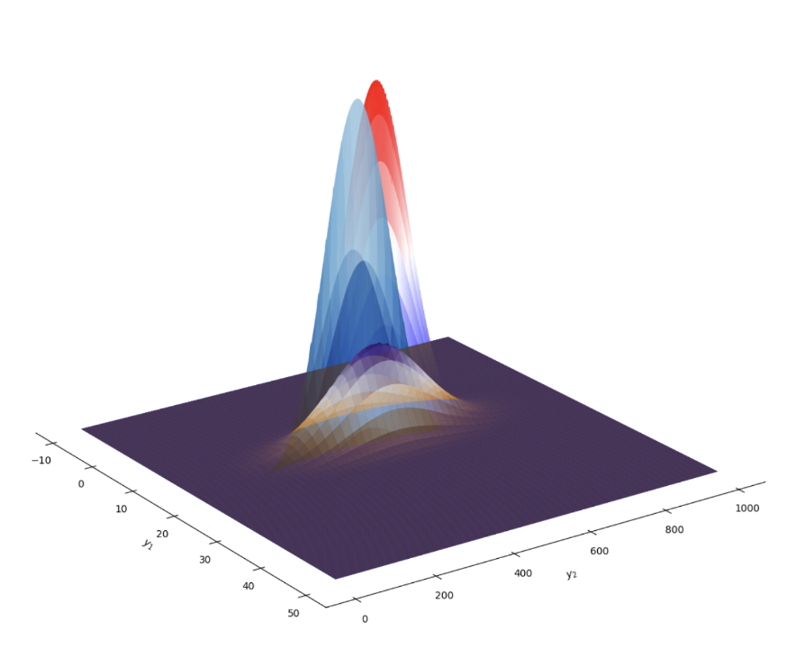
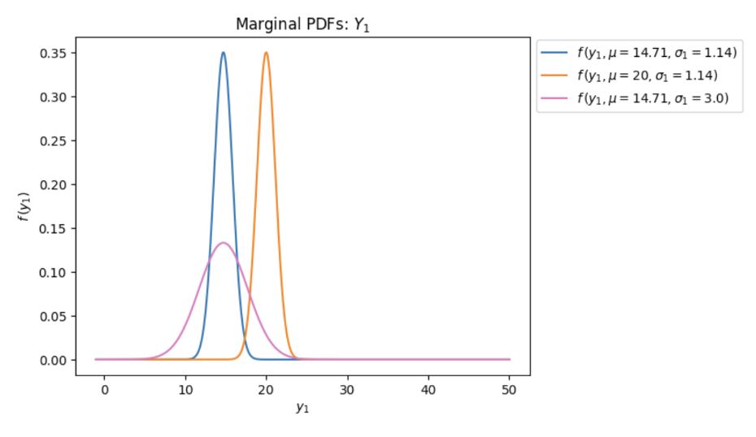

Bivariate Flood Model
Authors: Lane Ellisor and Olivia Sturges.
Brief: This project investigates the probability of flooding events using flood peak and flood volume. It then compares the results to existing hydrology literature.
Project Outcomes
We conducted a mathematical and statistical analysis of flood behavior using a bivariate normal distribution model to study the relationship between flood peak discharge and flood volume. We derived and analyzed key probability concepts including marginal and conditional probability density functions (PDFs), cumulative distribution functions (CDFs), and moment generating functions. We developed analytical solutions for multiple flood scenarios by varying mean and standard deviation parameters, then visualized the results through 2D and 3D statistical models. Using Python and R, we generated probability distribution plots and comparative simulations across different flood conditions. We also evaluated the limitations of the chosen model by comparing theoretical results to existing hydrology literature. While the model mathematically implied zero covariance and independence between flood peak and volume, our findings highlighted that this assumption conflicts with observed real-world flood correlations reported in prior research. This comparison demonstrated both the strengths and shortcomings of simplified probabilistic flood models in hydrologic analysis.

3D Visualization of the Conditional Probability Density Function (CDF) for flood peak and volume. The plot illustrates how the probability of flood events changes based on varying parameters of the bivariate normal distribution.

2D Visualization of the Marginal Probability Density Functions (PDFs) for flood peak and volume. The plot shows the individual probability distributions for each variable, highlighting their behavior under different parameter settings, the gamma, mu, and sigma.
Tools & Skills: Python, R, Probability Theory, Statistical Modeling, Mathematical Proofs, Data Visualization, Hydrologic Modeling, Multivariate Analysis.
Referenced Literature: B Sackl and H Bergmann. “A bivariate flood model and its application”. In: Hydrologic Frequency Modeling: Proceedings of the International Symposium on Flood Frequency and Risk Analyses, 14 May 1986, Louisiana State University, Baton Rouge, USA. Springer. 1987.